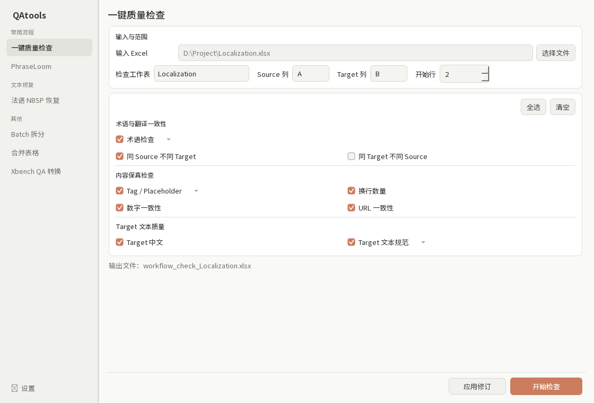
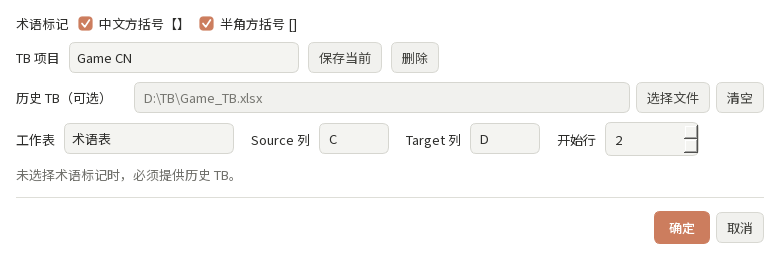
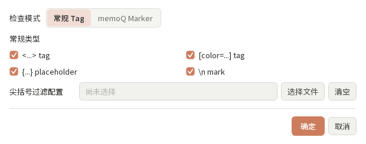
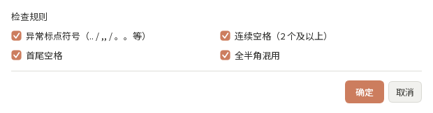

术语检查
默认开启从选定 mark 中建立新术语对，也可结合历史 TB 回扫全文，定位缺失、错译或映射冲突。
在同一个 Excel 工作流中完成术语、一致性、Tag、换行、数字、URL、 中文残留与 Target 文本规范检查，并把所有问题汇总到可编辑的报告中。

选择输入文件后，页面会预览 workflow_check_原文件名.xlsx；报告生成在输入文件同目录。
| 界面项 | 作用 | 建议 |
|---|---|---|
| 输入 Excel | 选择待检查的 .xlsx 或 .xlsm 文件。 |
检查期间保持文件可读写；如提示文件锁定，请先关闭 Excel 中打开的同名文件。 |
| 检查工作表 | 决定本次检查的数据表。选择文件后会自动载入工作表列表。 | 切换工作表后，GUI 会重新尝试识别 Source / Target 列。 |
| Source 列 / Target 列 | 填写 Excel 列字母，例如 A、B、AA。 |
两列不能相同。自动识别失败时可直接手动修改。 |
| 开始行 | 从该 Excel 行开始处理，默认 2。 |
通常第 1 行是表头；多行表头时改为第一条实际数据所在行。 |
点击左侧底部“设置”，在“Excel 表头自动识别”中分别填写 Source / Target
表头别名，每行一个并保存。内置 source / target 始终有效；
匹配忽略大小写和首尾空格。
从选定 mark 中建立新术语对，也可结合历史 TB 回扫全文，定位缺失、错译或映射冲突。
按 Source 单元格精确分组；完全相同的 Source 对应多个不同 Target 时报告组内每一行。
查找完全相同的非空 Target 是否对应多个 Source。适合发现误复用，但合理复用也很常见。
比较 Tag、Placeholder 或 memoQ Marker 的内容、次数及尖括号层级结构。
比较 Source / Target 的真实换行数。LF、CRLF、CR 都支持；文本 \n 不算真实换行。
比较数字表达式及重复次数，不要求顺序一致；自动排除 URL、Tag、Placeholder 等内部数字。
比较 URL 完整文本和重复次数，识别 HTTP(S)、FTP、file、mailto 与 www 开头的地址。
定位 Target 中残留的汉字、CJK 标点、全角标点和常见中文排版符号。
检查异常标点、连续空格、首尾空格和全半角混用；四条规则可独立开关。
【】 与半角方括号 []，从正文显式 mark 中发现新术语对。
“保存当前”可把历史 TB 文件、工作表、列和开始行保存为常用项目；之后从下拉框快速复用。
删除项目只删除 QAtools 中的配置，不会删除原始 TB 文件。
启用术语检查时，报告会包含“术语表”。它只写本次实际涉及的历史术语和本批新增术语，不复制整份历史 TB。
<...> tag[color=...] / [/color] tag{...} / {{...}} placeholder\n mark只检查数字 marker：{n}、{n>、<n}。适合 memoQ 导出的成对数字标记。
常规类型和尖括号过滤配置在此模式下会自动停用。

可选 JSON 文件，仅在“常规 Tag”且启用 <...> 时生效。
未选择配置时，工具按内置规则检查全部可识别尖括号 Tag。
..、,,、。。 等；允许 ...、…，连续感叹号和问号不在本规则中。
输入工作簿中的业务工作表会完整保留，检查结果以新增工作表呈现。
同一原始行命中多个检查时只保留一行，检查项和问题描述合并展示。
按本次启用的检查列出问题行数，便于快速判断重点。
仅启用术语检查时生成，包含本次涉及的术语映射及来源。
| 行号 | source | target | 修改后target | 问题描述 | 检查项 |
|---|---|---|---|---|---|
| 42 ↗ | Open {name} | 打开 name | 在此填写最终译文 | 【Tag 检查】Target 缺少 {name}；【数字一致性】… | Tag 检查；数字一致性 |
如果报告记录的原 Target 与当前数据表内容不同，该行会跳过并在完成提示中列出，避免覆盖报告生成后发生的其他修改。
workflow_check_原文件名.xlsx。下一次运行前请把旧报告重命名或移动到其他目录。